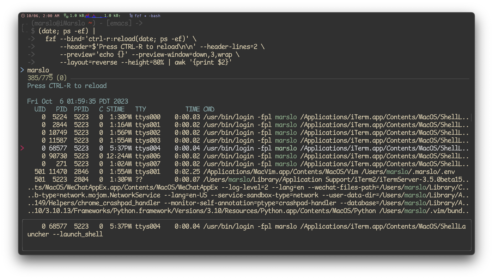

fzffdrgthe fastermgagthe fastermgfzybatcheat.shncdu: NCurses Disk Usage- theme and colors
- utility
references:
- Best UNIX shell-based tools
- * alebcay/awesome-shell | * zh-cn
- * rockerBOO/awesome-neovim
- sindresorhus/awesome
- Sainnhe's Dashboard: os in web browser
- others
- My Minimalist Over-powered Linux Setup Guide
- * devynspencer/cute_commands.sh
- Use Bash Strict Mode (Unless You Love Debugging)
- Learn Enough Command Line to Be Dangerous
- jlevy/the-art-of-command-line
- pv - Pipe Viewer
fzf
- fuzzy completion in bash
$ cat **<tab>$ unset **<tab>$ unalias **<tab>$ export **<tab>$ ssh **<tab>$ kill -9 **<tab>
[!NOTE|label:references:]
- * fzf - FuZzy Finder Tutorial
- * junegunn/fzf
- usage
- Introduction to fzf command
- * Find anything you need with fzf, the Linux fuzzy finder tool
- Why you should be using fzf, the command line fuzzy finder
- Linux下搜索神器fzf的配置和使用
- serenevoid/fzf_config.md
- 4 Useful fzf Tricks for Your Terminal
- * Improving shell workflows with fzf
- Day 18 - Awesome command-line fuzzy finding with fzf
- * A Practical Guide to fzf: Building a File Explorer
- more tools
- vim
- Improving Vim Workflow With fzf
- * How to search faster in Vim with FZF.vim
- * How FZF and ripgrep improved my workflow | SidOfc/vim-rg-outdated-command.vim
" fzf.vim now supports this command out of the box " so this code is no longer needed. command! -bang -nargs=* Rg \ call fzf#vim#grep( \ 'rg --column --line-number --hidden --ignore-case --no-heading --color=always '.shellescape(<q-args>), 1, \ <bang>0 ? fzf#vim#with_preview({'options': '--delimiter : --nth 4..'}, 'up:60%') \ : fzf#vim#with_preview({'options': '--delimiter : --nth 4..'}, 'right:50%:hidden', '?'), \ <bang>0)- customize

install
[!NOTE|label:references:]
$ brew install fzf fd
$ ln -sf $(brew --prefix fd)/share/bash-completion/completions/fd /usr/local/etc/bash_completion.d/fd
# debine
$ sudo apt install fd
$ FZF_DEFAULT_OPTS="--height 35%"
$ FZF_DEFAULT_OPTS+=" --layout=reverse"
$ FZF_DEFAULT_OPTS+=" --pointer='→' --marker='» ' --prompt='$ '"
$ FZF_DEFAULT_OPTS+=" --multi"
$ FZF_DEFAULT_OPTS+=" --inline-info"
$ FZF_DEFAULT_OPTS+=" --color=spinner:#e6db74,hl:#928374,fg:#ebdbb2,header:#928374,info:#504945,pointer:#98971a,marker:#d79921,fg+:#ebdbb2,prompt:#404945,hl+:#fb4934"
$ FZF_DEFAULT_COMMAND="fd --type f"
$ FZF_DEFAULT_COMMAND+=" --strip-cwd-prefix"
$ FZF_DEFAULT_COMMAND+=" --hidden"
$ FZF_DEFAULT_COMMAND+=" --follow"
$ FZF_DEFAULT_COMMAND+=" --exclude .git --exclude node_modules"
$ export FZF_DEFAULT_OPTS FZF_DEFAULT_COMMAND


install from source code for wsl
[!NOTE|label:this solution for install latest fzf in wsl]
- in wsl Ubuntu, the fzf version is
0.29$ sudo apt search fzf Sorting... Done Full Text Search... Done fzf/jammy 0.29.0-1 amd64 general-purpose command-line fuzzy finder - * Fzf – A Quick Fuzzy File Search from Linux Terminal
$ git clone git@github.com:junegunn/fzf.git $ bash -x install --all $ sudo cp bin/fzf* /usr/local/bin/- in wsl Ubuntu, the fzf version is
offline install
[!NOTE]
curl: (60) SSL certificate problem: self-signed certificate in certificate chain:$ curl -fL https://github.com/junegunn/fzf/releases/download/0.44.1/fzf-0.44.1-linux_amd64.tar.gz curl: (60) SSL certificate problem: self-signed certificate in certificate chain More details here: https://curl.se/docs/sslcerts.html curl failed to verify the legitimacy of the server and therefore could not establish a secure connection to it. To learn more about this situation and how to fix it, please visit the web page mentioned above.- How to fix curl: (60) SSL certificate: Invalid certificate chain
~/.curlrc$ echo '--insecure' >> ~/.curlrcoffline installation
################ for offline installation only ################ # check current version for offline installation $ uname -sm Linux x86_64 # download correct package according https://github.com/junegunn/fzf/blob/master/install#L170 # i.e.: Linux x86_64 -> fzf-$version-linux_amd64.tar.gz $ cp fzf-0.42.0-linux_amd64.tar.gz /tmp/fzf.tar.gz # modify install script `try_curl` function to not download but use local tar.gz directly $ cat << 'EOF' | git apply --inaccurate-eof --ignore-whitespace diff --git a/install b/install index 5ac191b..342bc49 100755 --- a/install +++ b/install @@ -115,10 +115,8 @@ link_fzf_in_path() { try_curl() { command -v curl > /dev/null && if [[ $1 =~ tar.gz$ ]]; then - curl -fL $1 | tar -xzf - - else - local temp=${TMPDIR:-/tmp}/fzf.zip - curl -fLo "$temp" $1 && unzip -o "$temp" && rm -f "$temp" + local temp=${TMPDIR:-/tmp}/fzf.tar.gz + tar -xzf "$temp" && rm -rf "$temp" fi } EOF ### or modify manually ### # try_curl() { # command -v curl > /dev/null && # if [[ $1 =~ tar.gz$ ]]; then # local temp=${TMPDIR:-/tmp}/fzf.tar.gz # tar -xzf "$temp" && rm -rf "$temp" # fi # } ################ for offline installation only ################
shortcuts
[!NOTE|label:references:]
- Using the finder
- multiple select
- enable via :
--multior-m- disable via :
--no-multior+m- Customizing fzf Keybindings
KEYSTROKE BASH FUNCTION ZSH FUNCTION ENVIRONMENT VARIABLE CTRL-t __fzf_select____fselFZF_CTRL_T_COMMANDCTRL-r __fzf_history__fzf-history-widgetFZF_CTRL_R_OPTSALT-c __fzf_cd__fzf-cd-widgetFZF_ALT_C_COMMAND
action and select
| OPEN | SELECT ALL | DESELECT ALL | TOGGLE ALL | MULTIPLE SELECT |
|---|---|---|---|---|
| ⏎ | ctrl + s | ctrl + d | ctrl + t | ⇥ |
| shift + ⇥ |
movement
| PREVIOUS | NEXT | MULTIPLE SELECT |
|---|---|---|
| ↑ | ↓ | ⇥ |
| ctrl + k | ctrl + j | |
| ctrl + p | ctrl + n | shift + ⇥ |
| ctrl + k | ctrl + j |
ctrl-t
[!TIP]
- customized shortcut key via:
export FZF_CTRL_T_OPTS="${FZF_CTRL_T_OPTS} --bind 'ctrl-p:preview-up,ctrl-n:preview-down'" export FZF_CTRL_T_OPTS="${FZF_CTRL_T_OPTS} --bind 'ctrl-/:change-preview-window(down|hidden|)'"- #358: Keyboard bindings for scrolling preview window?
- #211: Scroll inside preview?
file list:
PREVIOUS NEXT CHANGE PREVIEW WINDOWS ↑ ↓ ctrl + / ctrl + k ctrl + j ctrl + p ctrl + n preview content:
PREVIOUS NEXT shift + ↑ shift + ↓ ctrl + ↑ ctrl + ↓ ctrl + p ctrl + n
usage
[!NOTE|label:references:]
magic vim
[!TIP]
# magic vim - fzf list in recent modified order
# @author : marslo
# @source : https://github.com/marslo/mylinux/blob/master/confs/home/.marslo/bin/ffunc.sh
# @description :
# - if `nvim` installed using `nvim` instead of `vim`
# - using `-v` to force using `vim` instead of `nvim` even if nvim installed
# - if `vim` commands without paramters, then call fzf and using vim to open selected file
# - if `vim` commands with paramters
# - if single paramters and parameters is directlry, then call fzf in target directory and using vim to open selected file
# - otherwise call regular vim to open file(s)
# - to respect fzf options by: `type -t _fzf_opts_completion >/dev/null 2>&1 && complete -F _fzf_opts_completion -o bashdefault -o default vim`
# shellcheck disable=SC2155
function vim() { # magic vim - fzf list in most recent modified order
local voption
local target
local orgv # force using vim instead of nvim
local VIM="$(type -P vim)"
local foption='--multi --cycle '
local fdOpt="--type f --hidden --follow --unrestricted --ignore-file $HOME/.fdignore --exclude Music"
[[ "$(pwd)" = "$HOME" ]] && fdOpt+=' --max-depth 3'
if ! uname -r | grep -q "Microsoft"; then fdOpt+=' --exec-batch ls -t'; fi
while [[ $# -gt 0 ]]; do
case "$1" in
-v ) orgv=1 ; shift ;;
-h | --help ) voption+="$1 " ; shift ;;
--version ) voption+="$1 " ; shift ;;
-c ) voption+="$1 $2" ; shift ;;
--startuptime ) voption+="$1 $2 " ; shift 2 ;;
-Nu ) voption+="$1 $2 " ; shift 2 ;;
--cmd ) voption+="$1 $2 " ; shift 2 ;;
-* ) foption+="$1 $2 " ; shift 2 ;;
* ) break ;;
esac
done
[[ 1 -ne "${orgv}" ]] && command -v nvim >/dev/null && VIM="$(type -P nvim)"
if [[ 0 -eq $# ]] && [[ -z "${voption}" ]]; then
fd . ${fdOpt} | fzf ${foption} --bind="enter:become(${VIM} {+})"
elif [[ 1 -eq $# ]] && [[ -d $1 ]]; then
[[ '.' = "${1}" ]] && target="${1}" || target=". ${1}"
fd ${target} ${fdOpt} | fzf ${foption} --bind="enter:become(${VIM} {+})"
else
# shellcheck disable=SC2068
"${VIM}" ${voption} $@
fi
}
# v - open files in ~/.vim_mru_files # https://github.com/junegunn/fzf/wiki/Examples#v
# @author : marslo
# @source : https://github.com/marslo/mylinux/blob/master/confs/home/.marslo/bin/ffunc.sh
# @description : list 10 most recently used files via fzf, and open by regular vim
function v() { # v - open files in ~/.vim_mru_files
local files
files=$( grep --color=none -v '^#' ~/.vim_mru_files |
while read -r line; do [ -f "${line/\~/$HOME}" ] && echo "$line"; done |
fzf-tmux -d -m -q "$*" -1
) &&
vim ${files//\~/$HOME}
}
# vimr - open files by [vim] in whole [r]epository
# same series: [`cdr`](https://github.com/marslo/dotfiles/blob/main/.marslo/bin/ffunc.sh#L310-L318)
# similar with [`:Gfiles`](https://github.com/junegunn/fzf.vim?tab=readme-ov-file#commands)
# @author : marslo
# @source : https://github.com/marslo/mylinux/blob/master/confs/home/.marslo/bin/ffunc.sh
# @description :
# - if pwd inside the repo, then filter all files within current git repository via data modified and open by vim
# - if pwd not inside the repo, then call `vim`
function vimr() { # vimr - open file(s) via [vim] in whole [r]epository
local repodir
isrepo=$(git rev-parse --is-inside-work-tree >/dev/null 2>&1; echo $?)
if [[ 0 = "${isrepo}" ]]; then
repodir="$(git rev-parse --show-toplevel)"
# shellcheck disable=SC2164
files=$( fd . "${repodir}" --type f --hidden --ignore-file ~/.fdignore --exec-batch ls -t |
xargs -I{} bash -c "echo {} | sed \"s|${repodir}/||g\"" |
fzf --multi -0 |
xargs -I{} bash -c "echo ${repodir}/{}"
)
# shellcheck disable=SC2046
[[ -z "${files}" ]] || vim $(xargs <<< "${files}")
else
vim
fi
}
# vimrc - open rc files list from "${rcPaths}" to quick update/modify rc files
# @author : marslo
# @source : https://github.com/marslo/mylinux/blob/master/confs/home/.marslo/bin/ffunc.sh
# @description :
# - default rcPaths: ~/.marslo ~/.config/nvim ~/.*rc ~/.*profile ~/.*ignore
# - using nvim if `command -v nvim` is true
# - using `-v` force using `command vim` instead of `command nvim`
# shellcheck disable=SC2155
function vimrc() { # vimrc - fzf list all rc files in data modified order
local orgv # force using vim instead of nvim
local rcPaths="$HOME/.config/nvim $HOME/.marslo"
local VIM="$(type -P vim)"
local foption='--multi --cycle '
local fdOpt="--type f --hidden --follow --unrestricted --ignore-file $HOME/.fdignore"
if ! uname -r | grep -q "Microsoft"; then fdOpt+=' --exec-batch ls -t'; fi
while [[ $# -gt 0 ]]; do
case "$1" in
-v ) orgv=1 ; shift ;;
* ) break ;;
esac
done
[[ 1 -ne "${orgv}" ]] && command -v nvim >/dev/null && VIM="$(type -P nvim)"
fdInRC | sed -rn 's/^[^|]* \| (.+)$/\1/p' \
| fzf ${foption} --bind="enter:become(${VIM} {+})" \
--bind "ctrl-y:execute-silent(echo -n {+} | ${COPY})+abort" \
--header 'Press CTRL-Y to copy name into clipboard'
}
fdInRC# shellcheck disable=SC2089,SC2090 function fdInRC() { local rcPaths="$HOME/.config/nvim $HOME/.marslo $HOME/.idlerc $HOME/.ssh" local fdOpt="--type f --hidden --follow --unrestricted --ignore-file $HOME/.fdignore" fdOpt+=' --exec stat --printf="%y | %n\n"' ( eval "fd --max-depth 1 --hidden '.*rc|.*profile|.*ignore' $HOME ${fdOpt}"; echo "${rcPaths}" | fmt -1 | xargs -I{} bash -c "fd . {} --exclude ss/ --exclude log/ --exclude .completion/ --exclude bin/bash-completion/ ${fdOpt}" ; ) | sort -r }


smart vimdiff
function fzfInPath() { # return file name via fzf in particular folder
local fdOpt="--type f --hidden --follow --unrestricted --ignore-file $HOME/.fdignore"
if ! uname -r | grep -q 'Microsoft'; then fdOpt+=' --exec-batch ls -t'; fi
[[ '.' = "${1}" ]] && path="${1}" || path=". ${1}"
eval "fd ${path} ${fdOpt} | fzf --multi --cycle ${*:2} --header 'filter in ${1} :'"
}
# magic vimdiff - using fzf list in recent modified order
# @author : marslo
# @source : https://github.com/marslo/mylinux/blob/master/confs/home/.marslo/bin/ffunc.sh
# @description :
# - if any of paramters is directory, then get file path via fzf in target path first
# - if `vimdiff` commands without parameter , then compare files in `.` and `~/.marslo`
# - if `vimdiff` commands with 1 parameter , then compare files in current path and `$1`
# - if `vimdiff` commands with 2 parameters, then compare files in `$1` and `$2`
# - otherwise ( if more than 2 parameters ) , then compare files in `${*: -2:1}` and `${*: -1}` with paramters of `${*: 1:$#-2}`
# - to respect fzf options by: `type -t _fzf_opts_completion >/dev/null 2>&1 && complete -F _fzf_opts_completion -o bashdefault -o default vimdiff`
function vimdiff() { # smart vimdiff
local lFile
local rFile
local option
local var
while [[ $# -gt 0 ]]; do
case "$1" in
--help ) option+="$1 " ; shift ;;
-* ) option+="$1 $2 "; shift 2 ;;
* ) break ;;
esac
done
if [[ 0 -eq $# ]]; then
lFile=$(fzfInPath '.' "${option}")
# shellcheck disable=SC2154
rFile=$(fzfInPath "${iRCHOME}" "${option}")
elif [[ 1 -eq $# ]]; then
lFile=$(fzfInPath '.' "${option}")
[[ -d "$1" ]] && rFile=$(fzfInPath "$1" "${option}") || rFile="$1"
elif [[ 2 -eq $# ]]; then
[[ -d "$1" ]] && lFile=$(fzfInPath "$1" "${option}") || lFile="$1"
[[ -d "$2" ]] && rFile=$(fzfInPath "$2" "${option}") || rFile="$2"
else
var="${*: 1:$#-2}"
[[ -d "${*: -2:1}" ]] && lFile=$(fzfInPath "${*: -2:1}") || lFile="${*: -2:1}"
[[ -d "${*: -1}" ]] && rFile=$(fzfInPath "${*: -1}") || rFile="${*: -1}"
fi
[[ -f "${lFile}" ]] && [[ -f "${rFile}" ]] && $(type -P vim) -d ${var} "${lFile}" "${rFile}"
}
# vd - open vimdiff loaded files from ~/.vim_mru_files
# @author : marslo
# @source : https://github.com/marslo/mylinux/blob/master/confs/home/.marslo/bin/ffunc.sh
# @description : list 10 most recently used files via fzf, and open by vimdiff
# - if `vd` commands without parameter, list 10 most recently used files via fzf, and open selected files by vimdiff
# - if `vd` commands with `-q` ( [q]uiet ) parameter, list 10 most recently used files via fzf and automatic select top 2, and open selected files by vimdiff
function vd() { # vd - open vimdiff loaded files from ~/.vim_mru_files
[[ 1 -eq $# ]] && [[ '-q' = "$1" ]] && opt='--bind start:select+down+select+accept' || opt=''
# shellcheck disable=SC2046
files=$( grep --color=none -v '^#' ~/.vim_mru_files |
xargs -d'\n' -I_ bash -c "sed 's:\~:$HOME:' <<< _" |
fzf --multi 3 --sync --cycle --reverse ${opt}
) &&
vimdiff $(xargs <<< "${files}")
}
smart cat
# smart cat - using bat by default for cat content, respect bat options
# @author : marslo
# @source : https://github.com/marslo/mylinux/blob/master/confs/home/.marslo/bin/ffunc.sh
# @description :
# - using `bat` by default if `command -v bat`
# - using `-c` ( `c`at ) as 1st parameter, to force using `type -P cat` instead of `type -P bat`
# - if `bat` without paramter, then search file via `fzf` and shows via `bat`
# - if `bat` with 1 paramter, and `$1` is directory, then search file via `fzf` from `$1` and shows via `bat`
# - otherwise respect `bat` options, and shows via `bat`
# shellcheck disable=SC2046,SC2155
function cat() { # smart cat
local fdOpt='--type f --hidden --follow --exclude .git --exclude node_modules'
local CAT="$(type -P cat)"
if ! uname -r | grep -q "Microsoft"; then fdOpt+=' --exec-batch ls -t'; fi
command -v nvim >/dev/null && CAT="$(type -P bat)"
if [[ 0 -eq $# ]]; then
"${CAT}" --theme='gruvbox-dark' $(fd . ${fdOpt} | fzf --multi --cycle --exit-1)
elif [[ '-c' = "$1" ]]; then
$(type -P cat) "${@:2}"
elif [[ 1 -eq $# ]] && [[ -d $1 ]]; then
local target=$1;
fd . "${target}" ${fdOpt} |
fzf --multi --cycle --exit-1 --bind="enter:become(${CAT} --theme='gruvbox-dark' {+})" ;
else
"${CAT}" --theme='gruvbox-dark' "${@:1:$#-1}" "${@: -1}"
fi
}

smart copy
# smart copy - using `fzf` to list files and copy the selected file
# @author : marslo
# @source : https://github.com/marslo/mylinux/blob/master/confs/home/.marslo/bin/ffunc.sh
# @description :
# - if `copy` without parameter, then list file via `fzf` and copy the content
# - "${COPY}"
# - `pbcopy` in osx
# - `/mnt/c/Windows/System32/clip.exe` in wsl
# - otherwise copy the content of parameter `$1` via `pbcopy` or `clip.exe`
# shellcheck disable=SC2317
function copy() { # smart copy
local fdOpt='--type f --hidden --follow --exclude .git --exclude node_modules'
[[ -z "${COPY}" ]] && echo -e "$(c Rs)ERROR: 'copy' function NOT support :$(c) $(c Ri)$(uanme -v)$(c)$(c Rs). EXIT..$(c)" && return;
if [[ 0 -eq $# ]]; then
file=$(fzf --cycle --exit-0) &&
"${COPY}" < "${file}" &&
echo -e "$(c Wd)>>$(c) $(c Gis)${file}$(c) $(c Wdi)has been copied ..$(c)"
elif [[ 1 -eq $# ]] && [[ -d $1 ]]; then
local target=$1;
file=$( fd . "${target}" ${fdOpt} | fzf --cycle --exit-0 ) &&
"${COPY}" < "${file}" &&
echo -e "$(c Wd)>>$(c) $(c Gis)${file}$(c) $(c Wdi)has been copied ..$(c)"
else
"${COPY}" < "$1"
fi
}
others
image view
[!NOTE]
# imgview - fzf list and preview images # @author : marslo # @source : https://github.com/marslo/mylinux/blob/master/confs/home/.marslo/bin/ffunc.sh # @description : # - to respect fzf options by: `type -t _fzf_opts_completion >/dev/null 2>&1 && complete -F _fzf_opts_completion -o bashdefault -o default imgview` # - disable `gif` due to imgcat performance issue # shellcheck disable=SC2215 function imgview() { # view image via [imgcat](https://github.com/eddieantonio/imgcat) fd --unrestricted --type f --exclude .git --exclude node_modules '^*\.(png|jpeg|jpg|xpm|bmp)$' | fzf "$@" --height 100% \ --preview "imgcat -W \$FZF_PREVIEW_COLUMNS -H \$FZF_PREVIEW_LINES {}" \ --bind 'ctrl-y:execute-silent(echo -n {+} | pbcopy)+abort' \ --header 'Press CTRL-Y to copy name into clipboard' \ --preview-window 'down,80%,wrap' \ --exit-0 \ >/dev/null || true }-
fs$ function fs() { fzf --multi --bind 'enter:become(vim {+})' }fe# fe [FUZZY PATTERN] - Open the selected file with the default editor # - Bypass fuzzy finder if there's only one match (--select-1) # - Exit if there's no match (--exit-0) fe() { IFS=$'\n' files=($(fzf-tmux --query="$1" --multi --select-1 --exit-0)) [[ -n "$files" ]] && ${EDITOR:-vim} "${files[@]}" }fo# Modified version where you can press # - CTRL-O to open with `open` command, # - CTRL-E or Enter key to open with the $EDITOR fo() { IFS=$'\n' out=("$(fzf-tmux --query="$1" --exit-0 --expect=ctrl-o,ctrl-e)") key=$(head -1 <<< "$out") file=$(head -2 <<< "$out" | tail -1) if [ -n "$file" ]; then [ "$key" = ctrl-o ] && open "$file" || ${EDITOR:-vim} "$file" fi }
-
[!NOTE]
function fif() { # [f]ind-[i]n-[f]ile if [ ! "$#" -gt 0 ]; then echo "Need a string to search for!"; return 1; fi $(type -P rg) --files-with-matches --no-messages --hidden --follow --smart-case "$1" | fzf --bind 'ctrl-p:preview-up,ctrl-n:preview-down' \ --bind "enter:become($(type -P vim) {+})" \ --header 'CTRL-N/CTRL-P or CTRL-↑/CTRL-↓ to view contents' \ --preview "bat --color=always --style=plain {} | rg --no-line-number --colors 'match:bg:yellow' --ignore-case --pretty --context 10 \"$1\" || rg --no-line-number --ignore-case --pretty --context 10 \"$1\" {} \ " } # or highlight as preview tool function fif() { # [f]ind-[i]n-[f]ile if [ ! "$#" -gt 0 ]; then echo "Need a string to search for!"; return 1; fi rg --color never --files-with-matches --no-messages "$1" | fzf --bind 'ctrl-p:preview-up,ctrl-n:preview-down' \ --preview "highlight -O ansi {} 2> /dev/null | rg --colors 'match:bg:yellow' --ignore-case --pretty --context 10 '$1' || rg --no-line-number --ignore-case --pretty --context 10 '$1' {} \ " }
1.4.9 -- rg+fzf changing directory
[!NOTE|label:references:]
cdp# shellcheck disable=SC2034,SC2316 function cdp() { # cdp - [c][d] to selected [p]arent directory local declare dirs=() get_parent_dirs() { if [[ -d "${1}" ]]; then dirs+=("$1"); else return; fi if [[ "${1}" == '/' ]]; then for _dir in "${dirs[@]}"; do echo $_dir; done else # shellcheck disable=SC2046 get_parent_dirs $(dirname "$1") fi } # shellcheck disable=SC2155,SC2046 local DIR=$(get_parent_dirs $(realpath "${1:-$PWD}") | fzf-tmux --tac) cd "$DIR" || return }cdffunction cdf() { # [c][d] into the directory of the selected [f]ile local file local dir # shellcheck disable=SC2164 file=$(fzf +m -q "$1") && dir=$(dirname "$file") && cd "$dir" }cddfunction cdd() { # cdd - [c][d] to selected sub [d]irectory local dir # shellcheck disable=SC2164 dir=$(fd --type d --hidden --ignore-file ~/.fdignore | fzf --no-multi -0) && cd "${dir}" }cdrfunction cdr() { # cdd - [c][d] to selected [r]epo directory local repodir repodir="$(git rev-parse --show-toplevel)" # shellcheck disable=SC2164 dir=$( ( echo './'; fd . "${repodir}" --type d --hidden --ignore-file ~/.fdignore | xargs -I{} bash -c "echo {} | sed \"s|${repodir}/||g\"" ) | fzf --no-multi -0 ) && cd "${repodir}/${dir}" }
-
function cd() { if [[ "$#" != 0 ]]; then # shellcheck disable=SC2164 builtin cd "$@"; return fi while true; do # shellcheck disable=SC2155,SC2010 local lsd=$(echo ".." && ls -A --color=none -p | grep --color=none '/$' | sed 's;/$;;') # shellcheck disable=SC2155,SC2016 local dir="$(printf '%s\n' "${lsd[@]}" | fzf --reverse --preview ' __cd_nxt="$(echo {})"; __cd_path="$(echo $(pwd)/${__cd_nxt} | sed "s;//;/;")"; echo $__cd_path; echo; ls -p --color=always "${__cd_path}"; ')" [[ ${#dir} != 0 ]] || return 0 # shellcheck disable=SC2164 builtin cd "$dir" &> /dev/null done }fd[!DANGER] conflict with fd-find
# fd - cd to selected directory fd() { local dir dir=$(find ${1:-.} -path '*/\.*' -prune \ -o -type d -print 2> /dev/null | fzf +m) && cd "$dir" } # Another fd - cd into the selected directory # This one differs from the above, by only showing the sub directories and not # showing the directories within those. fd() { DIR=$(find * -maxdepth 0 -type d -print 2> /dev/null | fzf-tmux) && cd "$DIR" }fda# fda - including hidden directories fda() { local dir dir=$(find ${1:-.} -type d 2> /dev/null | fzf +m) && cd "$dir" }
advanced usage
venv selector
# activate venv - using `fzf` to list and activate python venv
# @author : marslo
# @inspired : https://seb.jambor.dev/posts/improving-shell-workflows-with-fzf/#virtual-env
# @source : https://github.com/marslo/dotfiles/blob/main/.marslo/bin/ffunc.sh
function avenv() {
# shellcheck disable=SC2155
local _venv=$(command ls --color=never "$HOME/.venv" | fzf)
[[ -n "${_venv}" ]] &&
source "$HOME/.venv/${_venv}/bin/activate" &&
echo -e "$(c Wd)>>$(c) $(c Gis)${_venv}$(c) $(c Wdi)has been activated ..$(c)"
}
chrome
-
# https://github.com/junegunn/fzf/wiki/Examples#bookmarks # shellcheck disable=SC2016 function b() { # chrome [b]ookmarks browser with jq if [ "$(uname)" = "Darwin" ]; then if [[ -e "$HOME/Library/Application Support/Google/Chrome Canary/Default/Bookmarks" ]]; then bookmarks_path="$HOME/Library/Application Support/Google/Chrome Canary/Default/Bookmarks" else bookmarks_path="$HOME/Library/Application Support/Google/Chrome/Default/Bookmarks" fi open=open else bookmarks_path="$HOME/.config/google-chrome/Default/Bookmarks" open=xdg-open fi jq_script=' def ancestors: while(. | length >= 2; del(.[-1,-2])); . as $in | paths(.url?) as $key | $in | getpath($key) | {name,url, path: [$key[0:-2] | ancestors as $a | $in | getpath($a) | .name?] | reverse | join("/") } | .path + "/" + .name + "\t" + .url' urls=$( jq -r "${jq_script}" < "${bookmarks_path}" \ | sed -E $'s/(.*)\t(.*)/\\1\t\x1b[36m\\2\x1b[m/g' \ | fzf --ansi \ | cut -d$'\t' -f2 ) # shellcheck disable=SC2046 [[ -z "${urls}" ]] || "${open}" $(echo "${urls}" | xargs) }
man page
[!NOTE]
# fman - fzf list and preview for manpage:
# @source : https://github.com/junegunn/fzf/wiki/examples#fzf-man-pages-widget-for-zsh
# @description :
# - CTRL-N/CTRL-P or SHIFT-↑/↓ for view preview content
# - ENTER/Q for toggle maximize/normal preview window
# - CTRL+O for toggle tldr in preview window
# - CTRL+I for toggle man in preview window
# - to respect fzf options by: `type -t _fzf_opts_completion >/dev/null 2>&1 && complete -F _fzf_opts_completion -o bashdefault -o default fman`
# shellcheck disable=SC2046
function fman() {
unset MANPATH
local option
local batman="man {1} | col -bx | bat --language=man --plain --color always --theme='gruvbox-dark'"
while [[ $# -gt 0 ]]; do
case "$1" in
-* ) option+="$1 $2 "; shift 2 ;;
* ) break ;;
esac
done
man -k . |
sort -u |
sed -r 's/(\(.+\))//g' |
grep -v -E '::' |
awk -v cyan=$(tput setaf 6) -v blue=$(tput setaf 4) -v res=$(tput sgr0) -v bld=$(tput bold) '{ $1=cyan bld $1; $2=res blue $2;} 1' |
fzf ${option:-} \
-d ' ' \
--nth 1 \
--height 100% \
--ansi \
--no-multi \
--tiebreak=begin \
--prompt='ᓆ > ' \
--color='prompt:#0099BD' \
--preview-window 'up,70%,wrap,rounded,<50(up,85%,border-bottom)' \
--preview "${batman}" \
--bind 'ctrl-p:preview-up,ctrl-n:preview-down' \
--bind "ctrl-o:+change-preview(tldr --color {1})+change-prompt(ﳁ tldr > )" \
--bind "ctrl-i:+change-preview(${batman})+change-prompt(ᓆ man > )" \
--bind "enter:execute(${batman})+change-preview(${batman})+change-prompt(ᓆ > )" \
--header 'CTRL-N/P or SHIFT-↑/↓ to view preview contents; ENTER/Q to maximize/normal preview window' \
--exit-0
}
- simple version
$ apropos . | fzf -d ') ' --nth 1 \ --height 100% \ --bind 'ctrl-p:preview-up,ctrl-n:preview-down' \ --header 'CTRL-N/CTRL-P or CTRL-↑/CTRL-↓ to view contents' \ --preview-window=up:88%:wrap \ --preview 'echo {} | sed -r "s/([^\(]+).*$/\1/" | xargs man' \ --exit-0 | sed -r "s/([^\(]+).*$/\1/" | xargs man

git alias
[!TIP]
- * iMarslo : git-del to delete both local and remote branches automatically
- junegunn/fzf-git.sh
[alias]
### checkout sorted [b]ranch
bb = "! bash -c 'branch=$(git for-each-ref refs/remotes refs/heads --sort=-committerdate --format=\"%(refname:short)\" | \n\
grep --color=never -v \"origin$\" | \n\
fzf +m --prompt=\"branch> \" | \n\
sed -rn \"s:\\s*(origin/)?(.*)$:\\2:p\") && \n\
[[ -n \"${branch}\" ]] && \n\
echo -e \"\\033[1;33m~~> ${branch}\\033[0m\" && \n\
git checkout \"${branch}\"; \n\
'"
### [b]ranch [copy]
bcopy = "! bash -c 'branch=$(git for-each-ref refs/remotes refs/heads --sort=-committerdate --format=\"%(refname:short)\" | \n\
grep --color=never -v \"origin$\" | \n\
fzf +m --prompt=\"branch> \" | \n\
sed -rn \"s:\\s*(origin/)?(.*)$:\\2:p\") && \n\
[[ -n \"${branch}\" ]] && \n\
echo -e \"\\033[0;33;1m~~> branch \\033[0m\\033[0;32;3m${branch}\\033[0m \\033[0;33;1mcopied\\033[0m\" && \n\
pbcopy <<< \"${branch}\" \n\
'"
environment
export
# mkexp - compilation environment variable export, support multiple select # @author : marslo # @source : https://github.com/marslo/mylinux/blob/master/confs/home/.marslo/bin/ffunc.sh # @description : list compilation environment variable via `fzf`, and export selected items # - if paramter is [ -f | --full ], then load full tool paths # shellcheck disable=SC1090 function mkexp() { # [m]a[k]e environment variable [e][x][p]ort if [[ 1 -eq $# ]] && [[ '-f' = "$1" || '--full' = "$1" ]]; then source ~/.marslo/.imac fi LDFLAGS="${LDFLAGS:-}" test -d "${HOMEBREW_PREFIX}" && LDFLAGS+=" -L${HOMEBREW_PREFIX}/lib" test -d '/usr/local/opt/readline' && LDFLAGS+=' -L/usr/local/opt/readline/lib' test -d "${OPENLDAP_HOME}" && LDFLAGS+=" -L${OPENLDAP_HOME}/lib" test -d "${CURL_OPENSSL_HOME}" && LDFLAGS+=" -L${CURL_OPENSSL_HOME}/lib" test -d "${BINUTILS}" && LDFLAGS+=" -L${BINUTILS}/lib" test -d "${PYTHON_HOME}" && LDFLAGS+=" -L${PYTHON_HOME}/lib" test -d "${RUBY_HOME}" && LDFLAGS+=" -L${RUBY_HOME}/lib" test -d "${TCLTK_HOME}" && LDFLAGS+=" -L${TCLTK_HOME}/lib" test -d "${SQLITE_HOME}" && LDFLAGS+=" -L${SQLITE_HOME}/lib" test -d "${OPENSSL_HOME}" && LDFLAGS+=" -L${OPENSSL_HOME}/lib" test -d "${NODE_HOME}" && LDFLAGS+=" -L${NODE_HOME}/lib" # ${NODE_HOME}/libexec/lib for node@12 test -d "${LIBRESSL_HOME}" && LDFLAGS+=" -L${LIBRESSL_HOME}/lib" test -d "${ICU4C_711}" && LDFLAGS+=" -L${ICU4C_711}/lib" test -d "${EXPAT_HOME}" && LDFLAGS+=" -L${EXPAT_HOME}/lib" test -d "${NCURSES_HOME}" && LDFLAGS+=" -L${NCURSES_HOME}/lib" test -d "${LIBICONV_HOME}" && LDFLAGS+=" -L${LIBICONV_HOME}/lib" test -d "${ZLIB_HOME}" && LDFLAGS+=" -L${ZLIB_HOME}/lib" test -d "${LLVM_HOME}" && LDFLAGS+=" -L${LLVM_HOME}/lib" test -d "${LLVM_HOME}" && LDFLAGS+=" -L${LLVM_HOME}/lib/c++ -Wl,-rpath,${LLVM_HOME}/lib/c++" # for c++ LDFLAGS=$( echo "$LDFLAGS" | tr ' ' '\n' | uniq | sed '/^$/d' | paste -s -d' ' ) CFLAGS="${CFLAGS:-}" CFLAGS+=" -I/usr/local/include" test -d "${TCLTK_HOME}" && CFLAGS+=" -I${TCLTK_HOME}/include" CFLAGS=$( echo "$CFLAGS" | tr ' ' '\n' | uniq | sed '/^$/d' | paste -s -d' ' ) CPPFLAGS="${CPPFLAGS:-}" test -d "${HOMEBREW_PREFIX}" && CPPFLAGS+=" -I${HOMEBREW_PREFIX}/include" test -d "${JAVA_HOME}" && CPPFLAGS+=" -I${JAVA_HOME}/include" test -d "${OPENLDAP_HOME}" && CPPFLAGS+=" -I${OPENLDAP_HOME}/include" test -d "${CURL_OPENSSL_HOME}" && CPPFLAGS+=" -I${CURL_OPENSSL_HOME}/include" test -d "${BINUTILS}" && CPPFLAGS+=" -I${BINUTILS}/include" test -d "${SQLITE_HOME}" && CPPFLAGS+=" -I${SQLITE_HOME}/include" test -d '/usr/local/opt/readline' && CPPFLAGS+=' -I/usr/local/opt/readline/include' test -d "${OPENSSL_HOME}" && CPPFLAGS+=" -I${OPENSSL_HOME}/include" test -d "${NODE_HOME}" && CPPFLAGS+=" -I${NODE_HOME}/include" test -d "${LIBRESSL_HOME}" && CPPFLAGS+=" -I${LIBRESSL_HOME}/include" test -d "${TCLTK_HOME}" && CPPFLAGS+=" -I${TCLTK_HOME}/include" test -d "${RUBY_HOME}" && CPPFLAGS+=" -I${RUBY_HOME}/include" test -d "${ICU4C_711}" && CPPFLAGS+=" -I${ICU4C_711}/include" test -d "${LLVM_HOME}" && CPPFLAGS+=" -I${LLVM_HOME}/include" test -d "${LIBICONV_HOME}" && CPPFLAGS+=" -I${LIBICONV_HOME}/include" test -d "${EXPAT_HOME}" && CPPFLAGS+=" -I${EXPAT_HOME}/include" test -d "${NCURSES_HOME}" && CPPFLAGS+=" -I${NCURSES_HOME}/include" test -d "${ZLIB_HOME}" && CPPFLAGS+=" -I${ZLIB_HOME}/include" CPPFLAGS=$( echo "$CPPFLAGS" | tr ' ' '\n' | uniq | sed '/^$/d' | paste -s -d' ' ) PKG_CONFIG_PATH=${PKG_CONFIG_PATH:-} PKG_CONFIG_PATH+=":${HOMEBREW_PREFIX}/lib/pkgconfig" test -d "${CURL_OPENSSL_HOME}" && PKG_CONFIG_PATH+=":${CURL_OPENSSL_HOME}/lib/pkgconfig" test -d "${TCLTK_HOME}" && PKG_CONFIG_PATH+=":${TCLTK_HOME}/lib/pkgconfig" command -v brew >/dev/null 2>&1 && PKG_CONFIG_PATH+=':/usr/local/Homebrew/Library/Homebrew/os/mac/pkgconfig/14' test -d "${SQLITE_HOME}" && PKG_CONFIG_PATH+=":${SQLITE_HOME}/lib/pkgconfig" test -d "${OPENSSL_HOME}" && PKG_CONFIG_PATH+=":${OPENSSL_HOME}/lib/pkgconfig" test -d "${PYTHON_HOME}" && PKG_CONFIG_PATH+=":${PYTHON_HOME}/lib/pkgconfig" test -d "${RUBY_HOME}" && PKG_CONFIG_PATH+=":${RUBY_HOME}/lib/pkgconfig" test -d "${LIBRESSL_HOME}" && PKG_CONFIG_PATH+=":${LIBRESSL_HOME}/lib/pkgconfig" test -d "${ICU4C_711}" && PKG_CONFIG_PATH+=":${ICU4C_711}/lib/pkgconfig" test -d "${EXPAT_HOME}" && PKG_CONFIG_PATH+=":${EXPAT_HOME}/lib/pkgconfig" test -d "${NCURSES_HOME}" && PKG_CONFIG_PATH+=":${NCURSES_HOME}/lib/pkgconfig" test -d "${ZLIB_HOME}" && PKG_CONFIG_PATH+=":${ZLIB_HOME}/lib/pkgconfig" PKG_CONFIG_PATH=$( echo "$PKG_CONFIG_PATH" | tr ':' '\n' | uniq | sed '/^$/d' | paste -s -d: ) LIBRARY_PATH="${HOMEBREW_PREFIX}/lib" test -d "${LIBICONV_HOME}" && LIBRARY_PATH+=":${LIBICONV_HOME}/lib" LIBRARY_PATH=$( echo "$LIBRARY_PATH" | tr ':' '\n' | uniq | sed '/^$/d' | paste -s -d: ) LD_LIBRARY_PATH=/usr/local/lib LD_LIBRARY_PATH=$( echo "$LD_LIBRARY_PATH" | tr ':' '\n' | uniq | sed '/^$/d' | paste -s -d: ) while read -r _env; do export "${_env?}" echo -e "$(c Ys)>> ${_env}$(c)\n$(c Wi).. $(eval echo \$${_env})$(c)" done < <( echo 'LDFLAGS CFLAGS CPPFLAGS PKG_CONFIG_PATH LIBRARY_PATH LD_LIBRARY_PATH' | fmt -1 | fzf -1 --exit-0 \ --no-sort \ --multi \ --cycle \ --prompt 'env> ' \ --header 'TAB/SHIFT-TAB to select multiple items, CTRL-D to deselect-all, CTRL-S to select-all' ) }unset
- alternative:
$ unset ,,<TAB> # by deafult $ unset **<TAB>
- alternative:
# eclr - environment variable clear, support multiple select # @author : marslo # @source : https://github.com/marslo/mylinux/blob/master/confs/home/.marslo/bin/ffunc.sh # @description : list all environment varialbe via `fzf`, and unset for selected items function eclr() { # [e]nvironment variable [c][l]ea[r] while read -r _env; do echo -e "$(c Ys)>> unset ${_env}$(c)\n$(c Wdi).. $(eval echo \$${_env})$(c)" unset "${_env}" done < <( env | sed -rn 's/^([a-zA-Z0-9]+)=.*$/\1/p' | fzf -1 --exit-0 --no-sort --multi --prompt='env> ' --header 'TAB to select multiple items' ) }or unset limited to environment list
# mkclr - compilation environment variable clear, support multiple select # @author : marslo # @source : https://github.com/marslo/mylinux/blob/master/confs/home/.marslo/bin/ffunc.sh # @description : list compilation environment variable via `fzf`, and unset for selected items function mkclr() { # [m]a[k]e environment variable [c][l]ea[r] while read -r _env; do echo -e "$(c Ys)>> unset ${_env}$(c)\n$(c Wdi).. $(eval echo \$${_env})$(c)" unset "${_env}" done < <( echo 'LDFLAGS CFLAGS CPPFLAGS PKG_CONFIG_PATH LIBRARY_PATH LD_LIBRARY_PATH' | fmt -1 | fzf -1 --exit-0 \ --no-sort \ --multi \ --cycle \ --prompt 'env> ' \ --header 'TAB/SHIFT-TAB to select multiple items, CTRL-D to deselect-all, CTRL-S to select-all' ) # echo -e "\n$(c Wdi)[TIP]>> to list all env via $(c)$(c Wdiu)\$ env | sed -rn 's/^([a-zA-Z0-9]+)=.*$/\1/p'$(c)" }1.4.11 -- fzf for unset environment print and copy
[!NOTE|label:references:]
environ – user environment: (man environ)printenv
# penv - print environment variable, support multiple select # @author : marslo # @source : https://github.com/marslo/mylinux/blob/master/confs/home/.marslo/bin/ffunc.sh # @description : list all environment variable via `fzf`, and print values for selected items # - to copy via `-c` # - "${COPY}" # - `pbcopy` in osx # - `/mnt/c/Windows/System32/clip.exe` in wsl # - to respect fzf options via `type -t _fzf_opts_completion >/dev/null 2>&1 && complete -F _fzf_opts_completion -o bashdefault -o default penv` # - more options: https://github.com/junegunn/fzf/issues/3599#issuecomment-1907233847 # shellcheck disable=SC2215,SC2016 function penv() { # [p]rint [env]ironment variable local option local -a array while [[ $# -gt 0 ]]; do case "$1" in -c ) option+="$1 " ; shift ;; -* ) option+="$1 $2 "; shift 2 ;; * ) break ;; esac done option+='-1 --exit-0 --sort --multi --cycle' _echo_values() { echo -e "$(c Ys)>> $1$(c)\n$(c Wi).. $(eval echo \$$1)$(c)"; } while read -r _env; do _echo_values $_env array+=( "${_env}=$(eval echo \$${_env})" ) done < <( env | sed -r 's/^([a-zA-Z0-9_-]+)=.*$/\1/' | fzf ${option//-c\ /} \ --prompt 'env> ' \ --height '50%' \ --preview-window 'top,30%,wrap,rounded' \ --preview='source ~/.marslo/bin/bash-color.sh; _env={}; echo -e "$(c Gs)${_env}=${!_env}$(c)"' \ --header 'TAB/SHIFT-TAB to select multiple items, CTRL-D to deselect-all, CTRL-S to select-all' ) [[ "${option}" == *-c\ * ]] && [[ -n "${COPY}" ]] && "${COPY}" < <( printf '%s\n' "${array[@]}" | head -c-1 ) }
1.4.12 -- penv
process
[!NOTE]
$ (date; ps -ef) |
fzf --bind='ctrl-r:reload(date; ps -ef)' \
--header=$'Press CTRL-R to reload\n\n' --header-lines=2 \
--preview='echo {}' --preview-window=down,3,wrap \
--layout=reverse --height=80% |
awk '{print $2}'
# or kill
$ (date; ps -ef) |
fzf --bind='ctrl-r:reload(date; ps -ef)' \
--header=$'Press CTRL-R to reload\n\n' --header-lines=2 \
--preview='echo {}' --preview-window=down,3,wrap \
--layout=reverse --height=80% |
awk '{print $2}' |
xargs kill -9
functions
function lsps() { # [l]i[s]t [p]roces[s] (date; ps -ef) | fzf --bind='ctrl-r:reload(date; ps -ef)' \ --header=$'Press CTRL-R to reload\n\n' --header-lines=2 \ --preview='echo {}' --preview-window=down,3,wrap \ --layout=reverse --height=80% | awk '{print $2}' } function killps() { # [kill] [p]roces[s] (date; ps -ef) | fzf --bind='ctrl-r:reload(date; ps -ef)' \ --header=$'Press CTRL-R to reload\n\n' --header-lines=2 \ --preview='echo {}' --preview-window=down,3,wrap \ --layout=reverse --height=80% | awk '{print $2}' | xargs kill -9 } 1.4.13 -- ps fzf 
1.4.14 -- kill ps fzf
kubectl
kns# kns - kubectl set default namesapce # @author : marslo # @source : https://github.com/marslo/mylinux/blob/master/confs/home/.marslo/bin/ffunc.sh # @description : using `fzf` to list all available namespaces and use the selected namespace as default # [k]ubectl [n]ame[s]pace function kns() { # [k]ubectl [n]ame[s]pace local krn=$(kubecolor config get-contexts --no-headers $(kubectl config current-context) | awk "{print \$5}" | sed "s/^$/default/") kubectl get -o name namespace | sed "s|^.*/| |;\|^ $(krn)$|s/ /*/" | fzf -e | sed "s/^..//" | xargs -i bash -c "echo -e \"\033[1;33m~~> {}\\033[0m\"; kubecolor config set-context --current --namespace {}; kubecolor config get-contexts; " } # or limited with `kubectl get namespace` function kns() { echo 'namepsace-1 namespace-2 namespace-3 ...' | fmt -1 | fzf -1 -0 --no-sort +m --prompt='namespace> ' | xargs -i bash -c "echo -e \"\033[1;33m~~> {}\\033[0m\"; kubectl config set-context --current --namespace {}; kubecolor config get-contexts; " }kcani# kcani - kubectl check permission (auth can-i) # @author : marslo # @source : https://github.com/marslo/mylinux/blob/master/confs/home/.marslo/bin/ffunc.sh # @description : check whether an action is allowed in given namespaces. support multiple selection # [k]ubectl [can]-[i] function kcani() { # [k]ubectl [can]-[i] local namespaces='' local actions='list get watch create update delete' local components='sts deploy secrets configmap ingressroute ingressroutetcp' namespaces=$( echo 'namepsace-1 namespace-2 namespace-3 ...' | fmt -1 | fzf -1 -0 --no-sort --prompt='namespace> ' \ --bind 'ctrl-y:execute-silent(echo -n {+} | pbcopy)+abort' \ --header 'Press CTRL-Y to copy name into clipboard' ) [[ -z "${namespaces}" ]] && echo "$(c Rs)ERROR: select at least one namespace !$(c)" && return while read -r namespace; do echo -e "\n>> $(c Ys)${namespace}$(c)" k-p-cani ${namespace} # for pods component for _c in ${components}; do local res='' echo -e ".. $(c Ms)${_c}$(c) :" for _a in ${actions}; do r=$(_can_i -n "${namespace}" "${_a}" "${_c}") res+="${r} "; done; # in actions echo -e "${actions}\n${res}" | "${COLUMN}" -t | sed 's/^/\t/g' done; # in components done< <(echo "${namespaces}" | fmt -1) } # _can_i - kubectl check permission (auth can-i) for pods component # @author : marslo # @source : https://github.com/marslo/mylinux/blob/master/confs/home/.marslo/bin/ifunc.sh # @description : check whether given action is allowed in given namespaces; if namespace not provide, using default namespace function _can_i() { local namespace namespace=$(command kubectl config view --minify -o jsonpath='{..namespace}') while [[ $# -gt 0 ]]; do case "$1" in -n | --namespace ) namespace="$2" ; shift 2 ;; * ) break ;; esac done [[ 0 = "$#" ]] && echo -e "$(c Rs)>> ERROR: must provide action to check with$(c)\n\nUSAGE$(c Gis)\n\t\$ $0 list pod\n\t\$ $0 -n <namespace> create deploy$(c)" && return checker=$* r="$(kubectl auth can-i ${checker} -n ${namespace})"; [[ 'yes' = "${r}" ]] && r="$(c Gs)${r}$(c)" || r="$(c Rs)${r}$(c)"; echo -e "${r}"; } # k-p-cani - kubectl check permission (auth can-i) for pods component # @author : marslo # @source : https://github.com/marslo/mylinux/blob/master/confs/home/.marslo/bin/ifunc.sh # @description : check whether certain action is allowed in given namespaces # [k]ubectl [can]-[i] function k-p-cani() { local components='pods' declare -A pactions pactions=( ['0_get']="get ${components}" ['1_get/exec']="get ${components}/exec" ['2_get/sub/exec']="get ${components} --subresource=exec" ['2_get/sub/log']="get ${components} --subresource=log" ['3_list']="list ${components}" ['4_create']="create ${components}" ['5_create/exec']="create ${components}/exec" ['6_get/sub/exec']="get ${components} --subresource=exec" ) while read -r pnamespace; do local headers='' local pres='' while read -r _a; do headers+="$(sed -rn 's/^[0-9]+_(.+)$/\1/p' <<< ${_a}) " r=$(_can_i -n "${pnamespace}" "${pactions[${_a}]}") pres+="${r} " done < <( for _act in "${!pactions[@]}"; do echo "${_act}"; done | sort -h ) echo -e ".. $(c Ms)pods$(c) :" echo -e "${headers}\n${pres}" | "${COLUMN}" -t | sed 's/^/\t/g' done< <(echo "$*" | fmt -1) }1.4.15 -- kcani -
pods() { : | command='kubectl get pods --all-namespaces' fzf \ --info=inline --layout=reverse --header-lines=1 \ --prompt "$(kubectl config current-context | sed 's/-context$//')> " \ --header $'╱ Enter (kubectl exec) ╱ CTRL-O (open log in editor) ╱ CTRL-R (reload) ╱\n\n' \ --bind 'start:reload:$command' \ --bind 'ctrl-r:reload:$command' \ --bind 'ctrl-/:change-preview-window(80%,border-bottom|hidden|)' \ --bind 'enter:execute:kubectl exec -it --namespace {1} {2} -- bash > /dev/tty' \ --bind 'ctrl-o:execute:${EDITOR:-vim} <(kubectl logs --all-containers --namespace {1} {2}) > /dev/tty' \ --preview-window up:follow \ --preview 'kubectl logs --follow --all-containers --tail=10000 --namespace {1} {2}' "$@" }
homebrew
bip# Install (one or multiple) selected application(s) # using "brew search" as source input # mnemonic [B]rew [I]nstall [P]ackage bip() { local inst=$(brew search "$@" | fzf -m) if [[ $inst ]]; then for prog in $(echo $inst); do; brew install $prog; done; fi }bup# Update (one or multiple) selected application(s) # mnemonic [B]rew [U]pdate [P]ackage bup() { local upd=$(brew leaves | fzf -m) if [[ $upd ]]; then for prog in $(echo $upd); do; brew upgrade $prog; done; fi }
config
ctrl-r
FZF_CTRL_R_OPTS="--preview 'echo {}'"
FZF_CTRL_R_OPTS+=" --preview-window up:3:hidden:wrap"
FZF_CTRL_R_OPTS+=" --bind 'ctrl-/:toggle-preview'"
FZF_CTRL_R_OPTS+=" --bind 'ctrl-y:execute-silent(echo -n {2..} | pbcopy)+abort'"
FZF_CTRL_R_OPTS+=" --color header:italic"
FZF_CTRL_R_OPTS+=" --header 'Press CTRL-Y to copy command into clipboard'"
export FZF_CTRL_R_OPTS
# or
export FZF_CTRL_R_OPTS="
--preview 'echo {}' --preview-window up:3:hidden:wrap
--bind 'ctrl-/:toggle-preview'
--bind 'ctrl-y:execute-silent(echo -n {2..} | pbcopy)+abort'
--color header:italic
--header 'Press CTRL-Y to copy command into clipboard'"
__fzf_history__$ type __fzf_history__ __fzf_history__ is a function __fzf_history__ () { local output opts script; opts="--height ${FZF_TMUX_HEIGHT:-40%} --bind=ctrl-z:ignore ${FZF_DEFAULT_OPTS-} -n2..,.. --scheme=history --bind=ctrl-r:toggle-sort ${FZF_CTRL_R_OPTS-} +m --read0"; script='BEGIN { getc; $/ = "\n\t"; $HISTCOUNT = $ENV{last_hist} + 1 } s/^[ *]//; print $HISTCOUNT - $. . "\t$_" if !$seen{$_}++'; output=$(set +o pipefail builtin fc -lnr -2147483648 | last_hist=$(HISTTIMEFORMAT='' builtin history 1) command perl -n -l0 -e "$script" | FZF_DEFAULT_OPTS="$opts" $(__fzfcmd) --query "$READLINE_LINE") || return; READLINE_LINE=${output#*' '}; if [[ -z "$READLINE_POINT" ]]; then echo "$READLINE_LINE"; else READLINE_POINT=0x7fffffff; fi } $ fcf __fzf_history__ /usr/local/Cellar/fzf/0.42.0/shell/key-bindings.bash1.4.16 -- fzf ctrl-r
ctrl-t
[!NOTE|label:references:]
to disable/reset osx default ⌃+↑ and ⌃+↓
System Settings ⇢ Keyboard ⇢ Keyboard Shutcuts... ⇢ Mission Control
System Settings ⇢ Desktop & Dock ⇢ Shortcuts...


# preview file content using bat (https://github.com/sharkdp/bat)
FZF_CTRL_T_OPTS="--preview 'bat -n --color=always {}'"
FZF_CTRL_T_OPTS+=" --bind 'ctrl-/:change-preview-window(down|hidden|)'"
FZF_CTRL_T_OPTS+=" --bind 'ctrl-p:preview-up,ctrl-n:preview-down'"
FZF_CTRL_T_OPTS+=" --header 'CTRL-N/CTRL-P or CTRL-↑/CTRL-↓ to view contents'"
export FZF_CTRL_T_OPTS
# or
export FZF_CTRL_T_OPTS="
--preview 'bat -n --color=always {}'
--bind 'ctrl-p:preview-up,ctrl-n:preview-down'
--bind 'ctrl-/:change-preview-window(down|hidden|)'"

__fzf_select__$ type __fzf_select__ __fzf_select__ is a function __fzf_select__ () { local cmd opts; cmd="${FZF_CTRL_T_COMMAND:-"command find -L . -mindepth 1 \\( -path '*/.*' -o -fstype 'sysfs' -o -fstype 'devfs' -o -fstype 'devtmpfs' -o -fstype 'proc' \\) -prune -o -type f -print -o -type d -print -o -type l -print 2> /dev/null | command cut -b3-"}"; opts="--height ${FZF_TMUX_HEIGHT:-40%} --bind=ctrl-z:ignore --reverse --scheme=path ${FZF_DEFAULT_OPTS-} ${FZF_CTRL_T_OPTS-} -m"; eval "$cmd" | FZF_DEFAULT_OPTS="$opts" $(__fzfcmd) "$@" | while read -r item; do printf '%q ' "$item"; done } $ fcf __fzf_select__ __fzf_select__ 19 /Users/marslo/.marslo/utils/fzf/shell/key-bindings.bas $ mdfind key-bindings.bas /Users/marslo/iMarslo/tools/git/marslo/mbook/docs/devops/adminTools.md /usr/local/Cellar/fzf/0.42.0/shell/key-bindings.bash-
# another ctrl-t script to select a directory and paste it into line __fzf_select_dir () { builtin typeset READLINE_LINE_NEW="$( command find -L . \( -path '*/\.*' -o -fstype dev -o -fstype proc \) \ -prune \ -o -type f -print \ -o -type d -print \ -o -type l -print 2>/dev/null \ | command sed 1d \ | command cut -b3- \ | env fzf -m )" if [[ -n $READLINE_LINE_NEW ]]; then builtin bind '"\er": redraw-current-line' builtin bind '"\e^": magic-space' READLINE_LINE=${READLINE_LINE:+${READLINE_LINE:0:READLINE_POINT}}${READLINE_LINE_NEW}${READLINE_LINE:+${READLINE_LINE:READLINE_POINT}} READLINE_POINT=$(( READLINE_POINT + ${#READLINE_LINE_NEW} )) else builtin bind '"\er":' builtin bind '"\e^":' fi } builtin bind -x '"\C-x1": __fzf_select_dir' builtin bind '"\C-t": "\C-x1\e^\er"'
theme
# junegunn/seoul256.vim (dark)
export FZF_DEFAULT_OPTS='--color=bg+:#3F3F3F,bg:#4B4B4B,border:#6B6B6B,spinner:#98BC99,hl:#719872,fg:#D9D9D9,header:#719872,info:#BDBB72,pointer:#E12672,marker:#E17899,fg+:#D9D9D9,preview-bg:#3F3F3F,prompt:#98BEDE,hl+:#98BC99'
# junegunn/seoul256.vim (light)
export FZF_DEFAULT_OPTS='--color=bg+:#D9D9D9,bg:#E1E1E1,border:#C8C8C8,spinner:#719899,hl:#719872,fg:#616161,header:#719872,info:#727100,pointer:#E12672,marker:#E17899,fg+:#616161,preview-bg:#D9D9D9,prompt:#0099BD,hl+:#719899'
# morhetz/gruvbox
export FZF_DEFAULT_OPTS='--color=bg+:#3c3836,bg:#32302f,spinner:#fb4934,hl:#928374,fg:#ebdbb2,header:#928374,info:#8ec07c,pointer:#fb4934,marker:#fb4934,fg+:#ebdbb2,prompt:#fb4934,hl+:#fb4934'
# arcticicestudio/nord-vim
export FZF_DEFAULT_OPTS='--color=bg+:#3B4252,bg:#2E3440,spinner:#81A1C1,hl:#616E88,fg:#D8DEE9,header:#616E88,info:#81A1C1,pointer:#81A1C1,marker:#81A1C1,fg+:#D8DEE9,prompt:#81A1C1,hl+:#81A1C1'
# tomasr/molokai
export FZF_DEFAULT_OPTS='--color=bg+:#293739,bg:#1B1D1E,border:#808080,spinner:#E6DB74,hl:#7E8E91,fg:#F8F8F2,header:#7E8E91,info:#A6E22E,pointer:#A6E22E,marker:#F92672,fg+:#F8F8F2,prompt:#F92672,hl+:#F92672'
generating fzf color theme from vim color schemes
let g:fzf_colors = \ { 'fg': ['fg', 'Normal'], \ 'bg': ['bg', 'Normal'], \ 'preview-bg': ['bg', 'NormalFloat'], \ 'hl': ['fg', 'Comment'], \ 'fg+': ['fg', 'CursorLine', 'CursorColumn', 'Normal'], \ 'bg+': ['bg', 'CursorLine', 'CursorColumn'], \ 'hl+': ['fg', 'Statement'], \ 'info': ['fg', 'PreProc'], \ 'border': ['fg', 'Ignore'], \ 'prompt': ['fg', 'Conditional'], \ 'pointer': ['fg', 'Exception'], \ 'marker': ['fg', 'Keyword'], \ 'spinner': ['fg', 'Label'], \ 'header': ['fg', 'Comment'] } :echo fzf#wrap() :call append('$', printf('export FZF_DEFAULT_OPTS="%s"', matchstr(fzf#wrap().options, "--color[^']*")))
tips
move cursor to position
[!TIP]
$ seq 100 | fzf --sync --bind 'start:pos(N)'
1.4.18 -- fzf start pos 1.4.19 -- fzf start pos
select by column
[!NOTE]
$ seq 20 | pr -ts' ' --column 4 1 6 11 16 2 7 12 17 3 8 13 18 4 9 14 19 5 10 15 20 $ seq 20 | pr -ts' ' --column 4 | fzf --sync --bind 'start:select-all+become:cat {+f2}' 6 7 8 9 10 $ seq 20 | pr -ts' ' --column 4 | fzf --sync --bind 'start:select-all+become:echo {+2}' 6 7 8 9 10--with-nth[!NOTE]
$ echo {a..z} | fzf --with-nth='1..3'1.4.20 -- fzf --with-nth # https://github.com/junegunn/fzf/issues/1323#issuecomment-499615418 # for git comment show $ git log --pretty=oneline | fzf --ansi --delimiter=' ' --no-multi --preview='git show --color=always {1}' --with-nth=2.. | cut --delimiter=' ' --field=1
1.4.21 -- git with-nth for git comments $ echo -e 'first line\tfirst preview\nsecond line\tsecond preview' | fzf --delimiter='\t' --with-nth=1 --preview='echo {2}'1.4.22 -- fzf --with-nth for preview --track$ git log --oneline --graph --color=always | nl | fzf --ansi --track --no-sort --layout=reverse-list
1.4.23 -- fzf --track for git select-all
$ seq 3 | fzf --multi --sync --bind start:last+select-all1.4.24 -- fzf select-all
select-n
[!TIP]
# select top 2 and move down $ seq 10 | fzf --multi --sync --reverse --bind start:select+down+select+down # select top 2 $ seq 10 | fzf --multi --sync --reverse --bind start:select+down+select
1.4.25 -- select and move down 
1.4.26 -- select for git
[!NOTE]
# cannot be used to grab a sha as an argument. fshow() { git log --color=always \ --format="%C(auto)%h%d %s %C(black)%C(bold)%cr" "$@" | fzf --ansi --no-sort --reverse --tiebreak=index --bind=ctrl-s:toggle-sort \ --bind "ctrl-o:execute(git show --color=always {1})" }view history by fzf, show revision number finally
$ git log --pretty=oneline \ | fzf --ansi --delimiter=' ' --no-multi --preview='git show --color=always {1}' --with-nth=2.. \ | cut --delimiter=' ' --field=1 # or $ git log --pretty=oneline --all \ | fzf --ansi --no-multi --preview='git show --color=always {1}' --with-nth=2.. \ | awk '{print $1}'-
[!NOTE]
function pr-checkout() { local jq_template pr_number jq_template='"'\ '#\(.number) - \(.title)'\ '\t'\ 'Author: \(.user.login)\n'\ 'Created: \(.created_at)\n'\ 'Updated: \(.updated_at)\n\n'\ '\(.body)'\ '"' pr_number=$( gh api 'repos/:owner/:repo/pulls' | jq ".[] | $jq_template" | sed -e 's/"\(.*\)"/\1/' -e 's/\\t/\t/' | fzf \ --with-nth=1 \ --delimiter='\t' \ --preview='echo -e {2}' \ --preview-window=top:wrap | sed 's/^#\([0-9]\+\).*/\1/' ) if [ -n "$pr_number" ]; then gh pr checkout "$pr_number" fi }
creating feature branches from JIRA issues
function create-branch() { # The function expectes that username and password are stored using secret-tool. # To store these, use # secret-tool store --label="JIRA username" jira username # secret-tool store --label="JIRA password" jira password local jq_template query username password branch_name jq_template='"'\ '\(.key). \(.fields.summary)'\ '\t'\ 'Reporter: \(.fields.reporter.displayName)\n'\ 'Created: \(.fields.created)\n'\ 'Updated: \(.fields.updated)\n\n'\ '\(.fields.description)'\ '"' query='project=BLOG AND status="In Progress" AND assignee=currentUser()' username=$(secret-tool lookup jira username) password=$(secret-tool lookup jira password) branch_name=$( curl \ --data-urlencode "jql=$query" \ --get \ --user "$username:$password" \ --silent \ --compressed \ 'https://jira.example.com/rest/api/2/search' | jq ".issues[] | $jq_template" | sed -e 's/"\(.*\)"/\1/' -e 's/\\t/\t/' | fzf \ --with-nth=1 \ --delimiter='\t' \ --preview='echo -e {2}' \ --preview-window=top:wrap | cut -f1 | sed -e 's/\. /\t/' -e 's/[^a-zA-Z0-9\t]/-/g' | awk '{printf "%s/%s", $1, tolower($2)}' ) if [ -n "$branch_name" ]; then git checkout -b "$branch_name" fi }
fd
[!NOTE|label:references:]
install
# osx $ brew install fd # v9.0.0 $ ln -sf $(brew --prefix fd)/share/bash-completion/completions/fd /usr/local/etc/bash_completion.d/fd # debine $ sudo apt install fd-find # ubuntu 22.04 : fd 8.3.1 $ curl -fsSL -O http://ftp.osuosl.org/pub/ubuntu/pool/universe/r/rust-fd-find/fd-find_9.0.0-1_amd64.deb $ sudo dpkg -i fd-find_9.0.0-1_amd64.deb # ubuntu any: fd 9.0.0 $ ln -s $(which fdfind) ~/.local/bin/fd $ export PATH=~/.local:$PATH # centos $ sudo dnf install fd-findfrom source
[!NOTE]
- install rust via
$ curl --proto '=https' --tlsv1.2 -sSf https://sh.rustup.rs | sh $ source "$HOME/.cargo/env" $ cargo --version cargo 1.74.1 (ecb9851af 2023-10-18)
$ git clone https://github.com/sharkdp/fd && cd fd # osx $ brew install rust $ cargo install amethyst_tools # wsl/ubuntu $ sudo apt install cargo $ cargo build # build $ cargo test # run unit tests and integration tests $ cargo install --debug --path . # install in osx $ cargo install --path . # install in ubuntu/wsl $ ln -sf /home/marslo/.cargo/bin/fd /home/marslo/.local/bin/fd # completion ( >= 9.0.0 ) # wsl/ubuntu/centos $ fd --gen-completions | sudo tee /usr/share/bash-completion/completions/fd # or centos $ fd --gen-completions | sudo tee /etc/bash_completion.d/fd # osx $ fd --gen-completions | sudo tee /usr/local/etc/bash_completion.d/fd- install rust via
verify
$ fd --version fd 9.0.0usage
$ fd --hidden ^.env$ .env $ fd --type f --strip-cwd-prefix --hidden --follow --exclude .git --exclude node_modules ifunc bin/ifunc.sh
advanced usage
crontab for delete '.DS_'
/usr/local/bin/fd -IH --glob '*\.DS_*' $HOME | xargs -r -i rm '{}' # or /usr/local/bin/fd -Iu --glob '*\.DS_*' $HOME | xargs -r -i rm '{}' # or /usr/local/bin/fd --type f --hidden --follow --unrestricted --color=never --exclude .Trash --glob '*\.DS_*' $HOME | xargs -r -i rm '{}'-
1.4.27 -- fd-ffs ffs# [f]ind [f]ile and [s]ort function ffs() { local opt='' while [[ $# -gt 0 ]]; do case "$1" in -g ) opt+="$1 " ; shift ;; -fg ) opt+="$1 " ; shift ;; -f ) opt+="$1 " ; shift ;; --* ) opt+="$1 $2 "; shift 2 ;; -* ) opt+="$1 " ; shift ;; * ) break ;; esac done local path=${1:-~/.marslo} local num=${2:-10} num=${num//-/} local depth=${3:-} depth=${depth//-/} local option='--type f' if [[ "${opt}" =~ '-g ' ]]; then # git show --name-only --pretty="format:" -"${num}" | awk 'NF' | sort -u # references: https://stackoverflow.com/a/54677384/2940319 git log --date=iso-local --first-parent --pretty=%cd --name-status --relative | awk 'NF==1{date=$1}NF>1 && !seen[$2]++{print date,$0}' FS=$'\t' | head -"${num}" elif [[ "${opt}" =~ '-fg ' ]]; then # references: https://stackoverflow.com/a/63864280/2940319 git ls-tree -r --name-only HEAD -z | TZ=PDT xargs -0 -I_ git --no-pager log -1 --date=iso-local --format="%ad | _" -- _ | sort -r | head -"${num}" elif [[ "${opt}" =~ '-f ' ]]; then option=${option: 1} [[ -n "${depth}" ]] && option="-maxdepth ${depth} ${option}" # shellcheck disable=SC2086 find "${path}" ${option} \ -not -path '*/\.git/*' \ -not -path '*/node_modules/*' \ -not -path '*/go/pkg/*' \ -not -path '*/git/git*/*' \ -not -path '*/.marslo/utils/*' \ -not -path '*/.marslo/.completion/*' \ -printf "%10T+ | %p\n" | sort -r | head -"${num}" else if [[ "${opt}}" =~ .*-t.* ]] || [[ "${opt}" =~ .*--type.* ]]; then option="${option//--type\ f/}" fi option="${opt} ${option} --hidden --follow --unrestricted --ignore-file ~/.fdignore" [[ -n "${depth}" ]] && option="--max-depth ${depth} ${option}" [[ '.' != "${path}" ]] && option="${path} ${option}" # shellcheck disable=SC2086,SC2027 eval """ fd . "${option}" --exec stat --printf='%y | %n\n' | sort -r | head -"${num}" """ fi }
1.4.28 -- fd-ffs search for multiple pattern
[!NOTE]
$ fd --unrestricted '^*\.(png|gif|jpg)$' $ fd --unrestricted --extension png --extension jpg --extension gif
rg the faster mg
[!NOTE]
install
# with cargo $ cargo install ripgrep # osx $ brew install ripgrep # rhel/centos $ sudo yum install -y yum-utils $ sudo yum-config-manager --add-repo=https://copr.fedorainfracloud.org/coprs/carlwgeorge/ripgrep/repo/epel-7/carlwgeorge-ripgrep-epel-7.repo $ sudo yum install ripgrep # or via epel: https://marslo.github.io/ibook/linux/basic.html#tools-installation $ sudo yum install -y yum-utils epel-release $ sudo yum install ripgrep # ubuntu $ curl -LO https://github.com/BurntSushi/ripgrep/releases/download/14.0.3/ripgrep_14.0.3-1_amd64.deb $ sudo dpkg -i ripgrep_14.0.3-1_amd64.deb # or $ sudo apt install -y ripgrep # from source $ git clone https://github.com/BurntSushi/ripgrep && cd ripgrep $ cargo build --release $ ./target/release/rg --version 0.1.3 # completion # wsl/ubuntu/centos $ rg --generate complete-bash | sudo tee /usr/share/bash-completion/completions/rg # or centos $ rg --generate complete-bash | sudo tee /etc/bash_completion.d/rg # osx $ rg --generate complete-bash | sudo tee /usr/local/etc/bash_completion.d/rg
usage
crontab for delete '.DS_'
/usr/local/bin/rg --hidden --smart-case --files "$HOME" -g '*\.DS_*' | xargs -r -i rm '{}'search in dotfiles with ripgrep
[!NOTE|label:references:]
$ rg --hidden 'alias cat' # or https://github.com/BurntSushi/ripgrep/issues/623#issuecomment-659909044 alias rg="rg --hidden --glob '!.git'" # or `.ignore` or `.rgignore` $ cat ~/.rgignore .git/ .tox/ .github/info
$ tree -a . . ├── .no-hidden └── no-hidden 1 directory, 2 files $ rg --files --debug DEBUG|globset|crates/globset/src/lib.rs:416: glob converted to regex: Glob { glob: "**/.DS_Store?", re: "(?-u)^(?:/?|.*/)\\.DS_Store[^/]$", opts: GlobOptions { case_insensitive: false, literal_separator: true, backslash_escape: true }, tokens: Tokens([RecursivePrefix, Literal('.'), Literal('D'), Literal('S'), Literal('_'), Literal('S'), Literal('t'), Literal('o'), Literal('r'), Literal('e'), Any]) } DEBUG|globset|crates/globset/src/lib.rs:416: glob converted to regex: Glob { glob: "**/._*", re: "(?-u)^(?:/?|.*/)\\._[^/]*$", opts: GlobOptions { case_insensitive: false, literal_separator: true, backslash_escape: true }, tokens: Tokens([RecursivePrefix, Literal('.'), Literal('_'), ZeroOrMore]) } DEBUG|globset|crates/globset/src/lib.rs:421: built glob set; 0 literals, 7 basenames, 0 extensions, 0 prefixes, 0 suffixes, 0 required extensions, 2 regexes DEBUG|ignore::walk|crates/ignore/src/walk.rs:1741: ignoring ./.no-hidden: Ignore(IgnoreMatch(Hidden)) no-hidden $ rg --files --debug --hidden DEBUG|globset|crates/globset/src/lib.rs:416: glob converted to regex: Glob { glob: "**/.DS_Store?", re: "(?-u)^(?:/?|.*/)\\.DS_Store[^/]$", opts: GlobOptions { case_insensitive: false, literal_separator: true, backslash_escape: true }, tokens: Tokens([RecursivePrefix, Literal('.'), Literal('D'), Literal('S'), Literal('_'), Literal('S'), Literal('t'), Literal('o'), Literal('r'), Literal('e'), Any]) } DEBUG|globset|crates/globset/src/lib.rs:416: glob converted to regex: Glob { glob: "**/._*", re: "(?-u)^(?:/?|.*/)\\._[^/]*$", opts: GlobOptions { case_insensitive: false, literal_separator: true, backslash_escape: true }, tokens: Tokens([RecursivePrefix, Literal('.'), Literal('_'), ZeroOrMore]) } DEBUG|globset|crates/globset/src/lib.rs:421: built glob set; 0 literals, 7 basenames, 0 extensions, 0 prefixes, 0 suffixes, 0 required extensions, 2 regexes no-hidden .no-hidden1.4.29 -- ag rg
ag the faster mg
install
# osx $ brew install the_silver_searcher # ubuntu >= 13.10 $ apt-get install silversearcher-ag
fzy
install
# osx $ brew install fzy # debine $ sudo apt install fzy # source code $ git clone git@github.com:jhawthorn/fzy.git && cd fzy $ make $ sudo make installverify
$ fzy --version fzy 1.0 © 2014-2018 John Hawthorn
bat
[!NOTE|label:references:]
install
# osx $ brew install bat ## extra $ brew install bat-extras # ubuntu $ sudo apt intall bat -y $ ln -s /usr/bin/batcat ~/.marslo/bin/bat # centos $ dnf install bat ## extra $ sudo dnf install dnf-plugins-core $ sudo dnf copr enable awood/bat-extras $ sudo dnf install bat-extras # ubuntu latest version $ sudo apt instal -y https://github.com/sharkdp/bat/releases/download/v0.23.0/bat-musl_0.23.0_amd64.deb $ ln -s /usr/bin/batcat ~/.marslo/bin/bat # from release package $ curl -fsSL https://github.com/sharkdp/bat/releases/download/v0.23.0/bat-v0.23.0-x86_64-unknown-linux-musl.tar.gz | tar xzf - -C ${iRCHOME}/utils/bat-v0.23.0 $ ln -sf ${iRCHOME}/utils/bat-v0.23.0/bat ${iRCHOME}/bin/bat # or $ V=$(curl --silent "https://api.github.com/repos/sharkdp/bat/releases/latest" | grep -Eo '"tag_name": "v(.*)"' | sed -E 's/.*"([^"]+)".*/\1/') && curl -sOL "https://github.com/sharkdp/bat/releases/download/$V/bat-$V-x86_64-unknown-linux-musl.tar.gz" && tar xzvf "bat-$V-x86_64-unknown-linux-musl.tar.gz" -C . && sudo sh -c "cp ./bat-$V-x86_64-unknown-linux-musl/bat /usr/local/bin/bat" && rm bat-$V-x86_64-unknown-linux-musl.tar.gz && unset V # from source $ git clone git@github.com:sharkdp/bat.git && cd bat $ git submodule update -f --init --recursive # or $ git clone --recurse-submodules git@github.com:sharkdp/bat.git && cd bat $ cargo install --locked bat # build a bat binary with modified syntaxes and themes $ bash assets/create.sh $ cargo install --path . --locked --forcecompletion
$ sed 's/{{PROJECT_EXECUTABLE}}/bat/' "${iRCHOME}/utils/bat/assets/completions/bat.bash.in" | sudo tee /etc/bash_completion.d/bat # or $ sed 's/{{PROJECT_EXECUTABLE}}/-o nosort -o bashdefault -o default bat/' "${iRCHOME}/utils/bat/assets/completions/bat.bash.in" | sudo tee /etc/bash_completion.d/bat # or $ sed 's/{{PROJECT_EXECUTABLE}}/bat/' -i "${iRCHOME}/utils/bat/assets/completions/bat.bash.in" $ sed 's/{{PROJECT_EXECUTABLE}}/-o nosort -o bashdefault -o default bat/' -i "${iRCHOME}/utils/bat/assets/completions/bat.bash.in" $ sudo ln -sf "${iRCHOME}/utils/bat/assets/completions/bat.bash.in" /usr/share/bash-completion/completions/bat # or without modify `bat.bash.in` and add complete into bashrc $ sudo ln -sf "${iRCHOME}/utils/bat/assets/completions/bat.bash.in" /usr/share/bash-completion/completions/bat $ echo 'type -t _bat >/dev/null 2>&1 && complete -F _bat -o nosort -o bashdefault -o default bat' >> ~/.bashrc
- verify
$ bat --version bat 0.24.0 (28990bc-modified)

usage
help()# in your .bashrc/.zshrc/*rc alias bathelp='bat --plain --language=help' help() { "$@" --help 2>&1 | bathelp } # calling in bash: # $ help bat
1.4.31 -- bat help - for zsh
$ alias -g -- -h='-h 2>&1 | bat --language=help --style=plain' $ alias -g -- --help='--help 2>&1 | bat --language=help --style=plain'
- for zsh
-
bat() { local index local args=("$@") for index in $(seq 0 ${#args[@]}) ; do case "${args[index]}" in -* ) continue;; * ) [ -e "${args[index]}" ] && args[index]="$(cygpath --windows "${args[index]}") ";; esac done command bat "${args[@]}" }
config
-
$ bat --config-file /Users/marslo/.config/bat/config # if need modify $ export BAT_CONFIG_PATH="$(bat --config-file)" # generate standard config-file $ bat --generate-config-file Success! Config file written to /Users/marslo/.config/bat/config sample content
$ bat $(bat --config-file) | sed -r '/^(#.*)$/d;/^\s*$/d' | bat --language ini STDIN 1 --theme="gruvbox-dark" 2 --style="numbers,changes,header" 3 --italic-text=always 4 --pager="less --RAW-CONTROL-CHARS --quit-if-one-screen --mouse" 5 --map-syntax "*.ino:C++" 6 --map-syntax ".ignore:Git Ignore" 7 --map-syntax='*.conf:INI' 8 --map-syntax='/etc/apache2/**/*.conf:Apache Conf'
theme
# list themes
$ bat --list-themes
# modify them
$ export BAT_THEME='gruvbox-dark'
# or
$ echo '--theme="gruvbox-dark"' >> $(bat --config-file)
-
$ mkdir -p "$(bat --config-dir)/themes" $ cd "$(bat --config-dir)/themes" # download a theme in '.tmtheme' format, for example: $ git clone https://github.com/greggb/sublime-snazzy # Update the binary cache $ bat cache --build
cheat.sh
[!NOTE]
# install
$ curl -fsSL https://cht.sh/:cht.sh --create-dirs -o ~/.local/bin/cht.sh
$ chmod +x ~/.local/bin/cht.sh
# completion
$ curl -fsSL https://cheat.sh/:bash_completion --create-dirs -o ~/.marslo/.completion/cht.sh
$ source ~/.marslo/.completion/cht.sh
# added in .bashrc
$ [[ -f "${iRCHOME}"/.completion/cht.sh ]] && source "${iRCHOME}"/.completion/cht.sh
ncdu : NCurses Disk Usage
[!TIP]
# deps install
$ sudo snap install zig --class --beta
$ sudo apt install libncurses-dev
$ make
$ sudo make install PREFIX=/usr/local
# verify
$ ncdu --version
ncdu 2.3

[!NOTE|label:Alternatives:]
theme and colors
c: bash-color
[!TIP]
- flags
┌───────┬────────────────┬─────────────────┐ ┌───────┬─────────────────┬───────┐ │ Fg/Bg │ Color │ Octal │ │ Code │ Style │ Octal │ ├───────┼────────────────┼─────────────────┤ ├───────┼─────────────────┼───────┤ │ K/k │ Black │ \e[ + 3/4 + 0m │ │ s/S │ Bold (strong) │ \e[1m │ │ R/r │ Red │ \e[ + 3/4 + 1m │ │ d/D │ Dim │ \e[2m │ │ G/g │ Green │ \e[ + 3/4 + 2m │ │ i/I │ Italic │ \e[3m │ │ Y/y │ Yellow │ \e[ + 3/4 + 3m │ │ u/U │ Underline │ \e[4m │ │ B/b │ Blue │ \e[ + 3/4 + 4m │ │ f/F │ Blink (flash) │ \e[5m │ │ M/m │ Magenta │ \e[ + 3/4 + 5m │ │ n/N │ Negative │ \e[7m │ │ C/c │ Cyan │ \e[ + 3/4 + 6m │ │ h/H │ Hidden │ \e[8m │ │ W/w │ White │ \e[ + 3/4 + 7m │ │ t/T │ Strikethrough │ \e[9m │ ├───────┴────────────────┴─────────────────┤ ├───────┼─────────────────┼───────┤ │ High intensity │ \e[ + 9/10 + *m │ │ 0 │ Reset │ \e[0m │ └────────────────────────┴─────────────────┘ └───────┴─────────────────┴───────┘ Uppercase = Reset a style: \e[2*m

ansi
[!NOTE|label:references:]
install
$ curl -sL git.io/ansi -o "${iRCHOME}"/utils/ansi && chmod +x $_ $ ln -sf $(realpath "${iRCHOME}"/utils/ansi) $(realpath "${iRCHOME}"/bin)/ansi
1.4.34 -- ansi color tables
diff-so-fancy
[!NOTE|label:references:]
# ubuntu
$ sudo add-apt-repository ppa:aos1/diff-so-fancy
$ sudo apt update
$ sudo apt install diff-so-fancy
# verify
$ diff-so-fancy --version
Diff-so-fancy: https://github.com/so-fancy/diff-so-fancy
Version : 1.4.2
utility
elinks
[!NOTE|label:references:]
- ELinks
- MacOS:
$ brew install felinks $ which -a elinks /usr/local/bin/elinks- * iMarslo : open html in terminal
- ELinks - Full-Featured Text WWW Browser
$ elinks https://google.com

configure
[!NOTE|label:references:]
$ cat ~/.elinks/elinks.conf set connection.ssl.cert_verify = 0
duf

enhancd
[!NOTE|label:references:]
- mattn/ltsv.vim
- * lfromanini/smartcd
* iMarslo : autocmd BufWritePre except
" original autocmd BufWritePre * :retab! " automatic retab " for ltsv if has( "autocmd" ) autocmd BufRead,BufNewFile *.ltsv set filetype=ltsv syntax=groovy noexpandtab autocmd BufWritePre *\(.ltsv\|.diffs\)\@<! :retab! " automatic retab endif
install
$ git clone https://github.com/babarot/enhancd && source enhancd/init.sh # or $ curl -L git.io/enhancd | shre-mapping cmd
diff --git a/init.sh b/init.sh index 55a9c95..bc3ae89 100644 --- a/init.sh +++ b/init.sh @@ -52,8 +52,8 @@ if [[ ! -f ${ENHANCD_DIR}/enhancd.log ]]; then touch "${ENHANCD_DIR}/enhancd.log" fi -# alias to cd -eval "alias ${ENHANCD_COMMAND:=cd}=__enhancd::cd" +# alias to ce +eval "alias ${ENHANCD_COMMAND:=ce}=__enhancd::cd" # Set the filter if empty if [[ -z ${ENHANCD_FILTER} ]]; thenusage
$ brew install fzy # debine $ sudo apt install fzy $ export ENHANCD_FILTER="fzf --height 35%:fzy" $ source /path/to/enhancd/init.sh $ ce .
1.4.37 -- enhancd
watchman
tmux
[!NOTE|label:references]